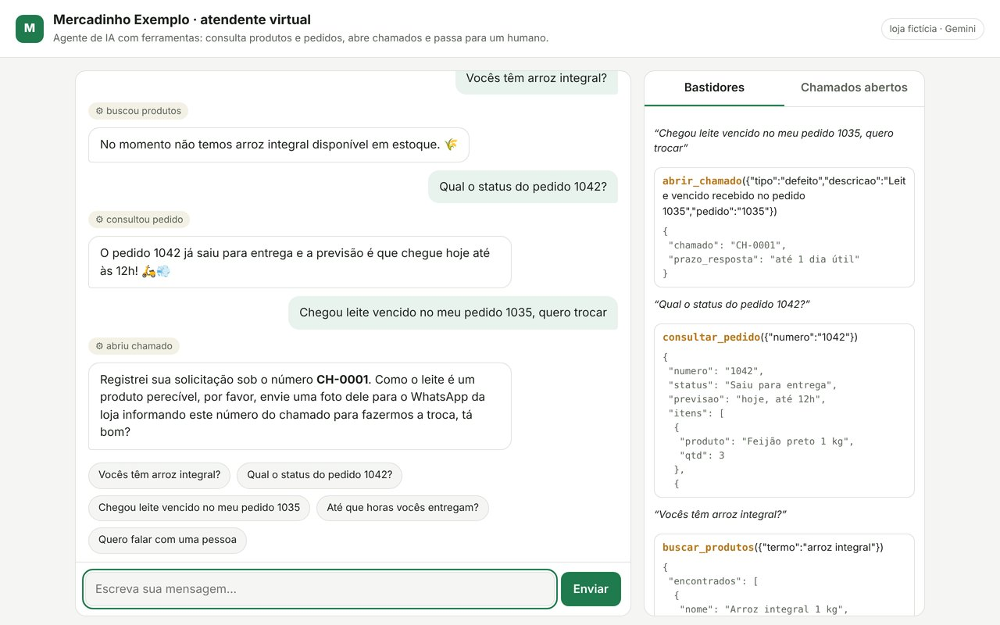

Agente de atendimento com IA
Um agente em que o LLM (Gemini) orquestra a conversa e decide, por chamada de ferramentas, quando buscar produtos, consultar pedidos, abrir chamados ou passar para uma pessoa.
- Responde só com o que as ferramentas devolvem; o painel “Bastidores” mostra cada decisão do modelo.
- Limites de uso e tempo máximo por chamada; coberto por 7 testes automatizados.
PythonFastAPIGemini APIfunction callingpytestRender